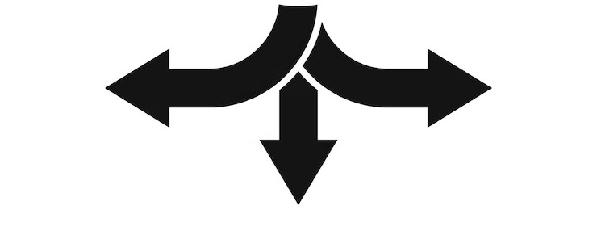

Présentation
Qui suis je
Fasciné par la manière dont les systèmes électroniques donnent vie aux technologies, je suis Boubacar Diallo. Voici le parcours qui m’a conduit à me spécialiser dans l’électronique et les systèmes embarqués. Après avoir obtenu un baccalauréat scientifique en Gambie, avec une spécialisation en Physique, SVT et Mathématiques, j’ai intégré une première année de BTS en signalisation, énergie et télécommunication à l'Institut Supérieur d’Enseignement Professionnel de Thiès (ISEPTH) au Sénégal. Cependant, j’ai rapidement constaté un écart important entre mes aspirations personnelles et le contenu de la formation, davantage orientée vers la gestion des transports ferroviaires et aériens que vers l'aspect technique. Cette prise de conscience m’a conduit à réorienter mon parcours en intégrant, avec conviction, le BUT en Génie Électrique et Informatique Industrielle (GEII) à l’IUT d’Angoulême, quitte à redémarrer une année d’études.
Actuellement en 3ème année, j’ai naturellement choisi le parcours "Électronique et Systèmes Embarqués", qui correspond pleinement à mes intérêts. J’y apprends principalement la conception de systèmes électroniques, la programmation embarquée, ainsi que l’intégration de capteurs et d’actionneurs dans des environnements techniques variés. Dans ce cadre, j’ai réalisé un stage chez Black Swan Technology, au cours duquel j’ai pu mettre en pratique de manière concrète et globale l’ensemble des compétences acquises pendant ma formation.
Ambition
À l’issue de mon BUT, je souhaite intégrer une école d’ingénieurs de haut niveau telle que Phelma, INSA Lyon ou ENSEEIHT Toulouse, afin d’approfondir mes connaissances en électronique et télécommunications. Initialement, mon ambition était de travailler dans le domaine de l’aéronautique, avec l’objectif à long terme d’occuper un poste de direction à l’Autorité Guinéenne de l’Aviation Civile, pour contribuer au développement, à la régulation et à la sécurité des systèmes aéronautiques en Guinée.
Toutefois, je suis de plus en plus séduit par le domaine des télécommunications, notamment en raison des enjeux liés à l’accès à Internet dans les pays en développement. Je réfléchis actuellement à un projet de création d’un opérateur télécom en Guinée, dans le but de proposer des offres accessibles et de réduire la fracture numérique, encore trop marquée par rapport au niveau de vie local.
Valeurs, engagements et centres d'intérêt
Je suis une personne loyale, rigoureuse, et animée par une forte volonté d’apprendre en continu. En dehors de mes études, je m’implique dans le bénévolat, notamment auprès de l'UJADEL (Union des jeunes et amis pour le développement), et je pratique le football au poste de milieu relayeur (n°8), afin de maintenir un bon équilibre entre corps et esprit.
Par ailleurs, je nourris un grand intérêt pour la philosophie, en particulier la pensée du fameux Socrate et sa méthode de la maïeutique (art de faire accoucher les esprits de leurs connaissances). J’aime également la littérature engagée, je pense notamment à l’œuvre Coup de pilon de David Diop, ainsi qu’à l’art oratoire, à travers le slam et les discours percutants. Récemment, j’ai remporté la première place d’un concours d’éloquence scientifique organisé par mon établissement, ce qui témoigne de ma capacité à communiquer avec clarté et passion sur des sujets techniques. Enfin, je m’intéresse à l’entrepreneuriat et à la politique, que je considère comme des leviers puissants pour transformer la société et faire émerger des projets à fort impact.
Présentation du BUT GEII
C'est quoi le BUT GEII ?
Le Bachelor Universitaire de Technologie en Génie Électrique et Informatique Industrielle (BUT GEII) est une formation universitaire de niveau bac +3, dispensée en Institut Universitaire de Technologie (IUT). Elle forme en trois ans des cadres intermédiaires capables d’intervenir sur des systèmes électriques, électroniques et informatiques complexes, aussi bien en phase de conception qu’en exploitation, maintenance ou amélioration continue.
Cette formation polyvalente et professionnalisante s’appuie sur un socle technique solide en électricité, électronique, automatisme et informatique industrielle. Elle permet aux étudiants d’acquérir des compétences à la fois théoriques et pratiques pour concevoir, programmer, intégrer et maintenir des systèmes industriels modernes. Le BUT GEII répond ainsi aux enjeux majeurs de l’industrie du futur, des réseaux intelligents, de la transition énergétique, ainsi que du développement des systèmes connectés et embarqués, aujourd’hui omniprésents dans les secteurs industriels et technologiques.
Le BUT GEII permet de développer des compétences professionnelles essentielles, directement mobilisables en milieu industriel et technologique. Les étudiants sont formés à la conception, la programmation, l’intégration et la maintenance de systèmes électriques et électroniques, qu’ils soient fixes ou embarqués, en tenant compte des contraintes de performance, de fiabilité et de sécurité. La formation apporte également une expertise en automatisation et en contrôle de procédés industriels, grâce à l’utilisation d’automates programmables, de réseaux industriels et d’interfaces homme-machine (IHM) permettant la supervision, le pilotage et l’optimisation des installations. Un accent particulier est mis sur le développement de systèmes embarqués communicants et autonomes, intégrant des microcontrôleurs, des capteurs, des actionneurs ainsi que des protocoles de communication filaires ou sans fil. Ces compétences sont essentielles pour répondre aux besoins actuels liés aux objets connectés (IoT), à la robotique et aux systèmes intelligents. À partir de la deuxième année, la formation propose une spécialisation progressive à travers différents parcours, notamment :
BUT2 GEII

Électricité et Maîtrise de l’Énergie (EME), centré sur la production, la conversion et la gestion de l’énergie électrique.
Le BUT GEII se distingue par une approche concrète et professionnalisante, articulée autour de nombreux travaux pratiques, de projets tutorés et de situations d’apprentissage et d’évaluation (SAÉ), qui placent l’étudiant dans des conditions proches du monde professionnel. La formation comprend également 22 à 26 semaines de stage en entreprise, avec la possibilité de suivre le cursus en alternance, favorisant une immersion progressive dans le milieu industriel. Cette organisation pédagogique permet de mettre en application les compétences acquises chaque année, de développer une réelle autonomie technique, ainsi qu’une capacité à travailler en équipe et en mode projet. Le BUT GEII prépare ainsi aussi bien à une insertion professionnelle directe qu’à une poursuite d’études jusqu’au niveau bac +5
Mon parcours
Plonger ici mon parcours en BUT GEII, année par année, à travers les SAÉ (projets académiques), et les stages en entreprise qui illustrent concrètement les compétences techniques et professionnelles que j’ai développées tout au long de la formation; et bonne chance pour tout parcourir